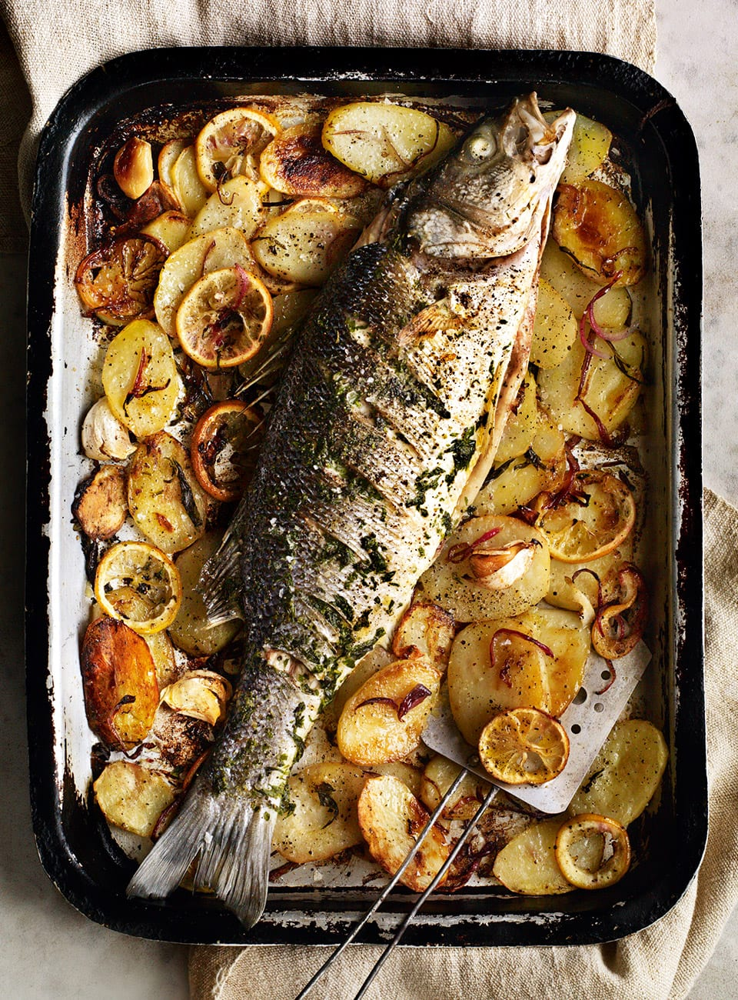

Meowscular Chef's Platter: Baked Fish with Herbs

Image source
Hot and aromatic baked Gajau
Serves: 3-4
Ingredients:
- 1 whole fish, scaled, gutted and gills removed (like bass)
- Fresh rosemary
- Fresh thyme
- Fresh sage
- 8 tbsp (125 g) butter
- 1 lemon, sliced
Steps:
- Chop herbs into small pieces.
- In a small saucepan melt butter. Add herbs and salt, if butter was unsalted. Mix everything together.
- Once butter has cooled, rub it generously into fish. It should be fully covered with the mixture. Put the rest of the butter inside.
- Preheat oven to 375 °F (190 °C). Put fish on a baking tray, top with slices of lemon. Bake for 40 minutes.
- Top with rosemary and serve.
Back to main